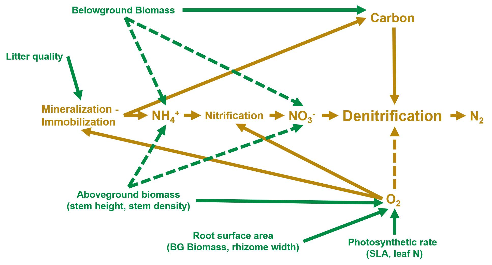

Using Organismal Traits to Predict Ecosystem Processes
 Photo credit: Stuart Findlay
Photo credit: Stuart Findlay
Project Description
This project seeks to develop a mechanistic understanding of how plants influence rates of nitrogen removal via microbial denitrification using traits of the plant community. My work has addressed this challenge at multiple scales using such approaches as literature synthesis, field surveys, field manipulations, and smaller scale experiments. In a meta-analysis of 419 published measurements of denitrification, I estimated that vegetation on average increases the ability of marshes to remove nitrogen by 55% and that this effect differs among species. I pursued two field projects to explain variation among species by investigating interactions among plant traits and sediment properties and processes. In the first, I determined that removing an invasive marsh grass, Phragmites australis, increased sediment nitrogen concentrations and decreased denitrification relative to marshes containing either invasive Phragmites or native cattail species. These results suggest a trade-off between removing invasive species to conserve biodiversity and managing wetlands to promote nitrogen removal. The second project addressed interactions between belowground traits of common salt marsh dominant Spartina alterniflora and ecosystem properties and processes along a land-use gradient on Long Island, NY. Root growth of S. alterniflora responded positively to salinity and negatively to nitrogen availability, suggesting that eutrophication and sea-level rise may have opposing effects on root mass, and therefore marsh stability, in the future. Preliminary results from Long Island field surveys further suggest that S. alterniflora roots influence nitrification and denitrification rates by introducing oxygen to sediments, providing further evidence that plants alter key nitrogen transformation processes and influence the ability of wetlands to remove nitrogen. These projects represent an effort to solve pressing management problems using ecological theory from several ecological sub-disciplines at multiple scales.
You read more about these projects in Publications.

Collaborators
Stephen B. Baines, Stony Brook University
Dianna Padilla, Stony Brook University
Jessica Gurevitch, Stony Brook University
Alistair Rogers, Brookhaven National Laboratory
Stuart Findlay, Cary Institute of Ecosystem Studies
Funding Sources
New York Sea Grant R/CMC-10. PI: Baines
Hudson River Foundation Tibor T. Polgar Fellowship. PI: Alldred
Hudson River Foundation Graduate Research Fewllowship. PI: Alldred
Slobodkin Award for Research in Ecology, Stony Brook University Department of Ecology and Evolution. PI: Alldred
Robert R. Sokal Award for Research in Statistical Biology, Stony Brook University Department of Ecology and Evolution. PI: Alldred
The Nature Conservancy, ENY Chapter.
Organizations Providing Site Access
The Nature Conservancy, Long Island
US Fish and Wildlife
Suffolk County Parks
The Town of Hempstead
The Village of Sands Point
The Ward Melville Heritage Organization
Mary Alldred
Associate Professor of Environmental Science
My research interests include nitrogen cycling, wetland ecology, urban ecology, and coastal management and restoration.